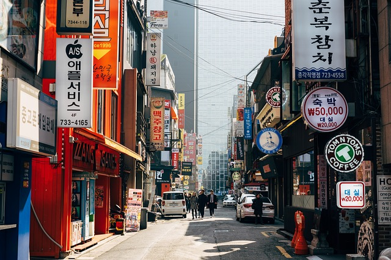

Trip plan to Korea
Why I want to go to korea
South Korea has been on my travel bucket list for a long time.
I’m drawn to its rich cultural heritage and the warmth of its people.
I’m especially interested in exploring the country’s delicious cuisine, learning about its fascinating history, and practicing my Korean language skills.
As a devoted K-pop fan, I’m also looking forward to visiting iconic locations and experiencing the vibrant music scene firsthand.
Click here to learn more about kpop
Places I want to visit in korea:
- Seoul: As the capital, Seoul offers a perfect blend of ancient and modern.
Explore historical palaces like Gyeongbokgung, delve into traditional culture at Bukchon Hanok Village, and experience the city's vibrant energy in Myeongdong.
Click here for a travel guide to Seoul

- Gyeongju: Often called the "museum without walls," Gyeongju is a treasure trove of historical sites.
Visit Bulguksa Temple, a UNESCO World Heritage site, and explore the ancient tombs of the Silla Kingdom.
- Jeju Island: While known for its stunning natural beauty, Jeju also offers a glimpse into traditional Korean culture.
Visit Seongsan Ilchulbong (Sunrise Peak) and Hallasan Mountain, or explore the island's unique folklore and mythology.
Here are some things to do in Jeju Island
- Busan: This coastal city is famous for its fresh seafood.
Enjoy grilled fish, sashimi, and other seafood delicacies while enjoying the ocean breeze.
Places to eat in Busan
Kpop is korean pop music. I started listening to Kpop in 2015 when I was 16 years old.
There are many different groups in Kpop and every one hais a unique concept.
What I love in Kpop is the unique sounds, the dances and the clothes.